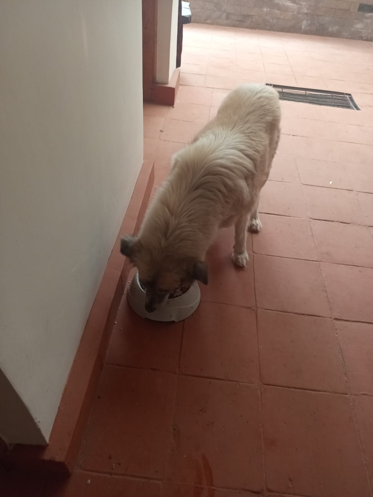

1. Mucheru World of Golf — Dam Excavation, Tee Box 9 Levelling, Green Trenching & Soil Grading
Dam 3 deepening & 72 tipper haulage trips, Dam 2 basin shaping, Tee Box 9 levelling, manual sub-surface trenching on Greens 18 & 11, timber haulage & greens irrigation
- Dam 3 Excavation in Progress (7h 00m): Heavy excavation progressed at Dam 3, with the Sunward SWE210 hydraulic tracked excavator running for 7 hours (@ KES 8,500/hr = KES 59,500.00), actively cutting into the central basin floor and loading excavated spoil into tipper trucks.
- Backhoe Operations & Levelling (8h 00m): The backhoe loader operated for 8 hours (@ KES 6,500/hr = KES 52,000.00), levelling the Dam 2 basin terrain and slopes, executing full levelling of Tee Box No. 9, and spreading dumped soil across fairway corridors.
- Damping Tipper Haulage (72 Trips): Damping tipper lorries completed 72 total trips (@ KES 1,000/trip = KES 72,000.00), hauling excavated earth and overburden from Dam 3 to designated course damping and contour zones.
- Total Daily Machinery Expenditure: Combined heavy equipment and earthmoving operations cost for the day amounted to KES 183,500.00.
- Timber Posts & Brush Relocation (Overseen by Kinoti): Completed 1 tractor trailer trip loading and transporting felled tree branches, brushwood, and timber posts across the golf site for area clearance.
| Equipment / Resource | Operating Time / Volume | Unit Rate (KES) | Total Cost (KES) | Operational Scope & Target Locations |
|---|---|---|---|---|
| Hydraulic Excavator | 7 Hours 00 Minutes | @ KES 8,500 / hr | KES 59,500.00 | Dam 3 basin deepening, embankment profiling & tipper loading |
| Backhoe Loader | 8 Hours 00 Minutes | @ KES 6,500 / hr | KES 52,000.00 | Dam 2 levelling/shaping, Tee Box 9 levelling & dumped soil grading |
| Damping Tipper Lorries | 72 Total Trips | @ KES 1,000 / trip | KES 72,000.00 | Excavated topsoil and overburden haulage from Dam 3 |
| Tractor Logistics (Kinoti) | 1 Trip | Internal / Farm Tractor | — | Loading and relocating timber posts across the golf site |
| Total Machinery & Operations Cost: | KES 183,500.00 | |||
- Digging Trenches on Greens No. 18 & No. 11: Ground crews executed manual sub-surface drainage trenching across the levelled green foundations for Green No. 18 and Green No. 11, digging along white chalked grid lines with pickaxes, shovels, and wheelbarrows.
- Watering Greens No. 5 & No. 7 (Overseen by Willy): Rotary pop-up and riser sprinkler irrigation systems were operated to water and maintain established lush turfgrass cover on Green No. 5 and Green No. 7.
- Comprehensive Site Aerial Survey: High-definition aerial drone footage captured the full landscape progress across Mucheru World of Golf, highlighting Green 18 trenching grid, active Dam 3 excavation, tipper haulage, and adjacent constructed green profiles.
📷 Mucheru World of Golf Visual Documentation

Aerial Survey: Green 18 Trenching & Dam 3
High-angle drone view displaying Green 18 drainage grid, active Dam 3 excavator with tippers, and completed green foundation.

Dam 3 Basin Excavation & Truck Loading (7h)
Sunward SWE210 tracked excavator digging the Dam 3 reservoir bowl and loading excavated spoil into a heavy tipper lorry.

Dam 3 Reservoir Deepening
Heavy hydraulic excavator actively profiling the Dam 3 reservoir basin slopes and deepening the central water retention zone.

Dam 2 Basin Levelling & Grading (8h Backhoe)
Yellow backhoe loader grading and pushing earth mounds across the floor of Dam 2 to establish a smooth bed profile.

Dam 2 Embankment Slope Shaping
Backhoe loader working along the perimeter slope, profiling and shaping the outer containment embankment of Dam 2.

Dam 2 Finished Grade & Tree Island
Graded and levelled Dam 2 perimeter floor with the central natural acacia tree island neatly preserved.

Greens 18 & 11 Sub-Surface Trenching
Ground crews using pickaxes, hoes, and shovels to excavate drainage channels along chalked grid layout lines.
Manual Green Drainage Excavation
Site workers excavating uniform drainage trenches across the putting green and clearing spoil using wheelbarrows.

Fairway & Tee Box 9 Soil Grading
Front loader spreading and levelling large mounds of excavated earth dumped along fairway corridors and Tee Box 9.

Earth Spoil Ridge Contouring
Heavy backhoe loader levelling a continuous ridge of dumped earth to match the natural course elevation.

Soil Mound Distribution
Loader scooping and distributing dumped earth across access tracks to eliminate rough terrain unevenness.

Levelled & Compacted Ground Profile
Smooth, graded, and compacted fairway access corridor following machine levelling operations.

Timber Relocation (Overseen by Kinoti)
Red tractor trailer loaded with felled branches, timber posts, and cleared brushwood for haulage (1 trip).

Turf Irrigation on Greens 5 & 7
Rotary pop-up sprinklers spraying wide water arcs across established green turf under Willy's supervision.

Active Green Sprinkler Coverage
Panoramic view of rotary sprinklers providing complete moisture coverage across the circular green putting surface.
2. Chaka Farms — Dairy Yield, Veterinary Treatment, Feed Procurement, Compound Irrigation & Canine Graduation
Milking yield logs (7.0L total), veterinary checkup & goat treatment, Joy Max feed & Cattlephos maziwa purchase, compound lawn irrigation, canine training completion
- Dairy Milking Yield (7.0 Litres Total): Daily milking concluded under Kamandau's supervision, recording a strong total daily yield of 7.0 Litres of fresh milk (Morning Session: 4.5 Litres | Evening Session: 2.5 Litres).
- Veterinary Examination & Goat Kid Treatment: A certified veterinary doctor visited the farm to examine an ailing goat kid in the goat pen; medical diagnosis was performed and appropriate treatment was successfully administered.
- Joy Max Animal Feed Procurement: Procured 1 bag (70 kg) of high-grade Joy Max Animal Feed to ensure fortified nutritional intake for farm livestock.
- Cattlephos Maziwa Mineral Purchase: Purchased Cattlephos Maziwa high-phosphorus dairy mineral supplement to support optimal lactation, milk quality, and overall herd health.
| Production Session | Morning Yield (Litres) | Evening Yield (Litres) | Total Daily Volume (Litres) |
|---|---|---|---|
| Fresh Milk Yield | 4.5 Litres | 2.5 Litres | 7.0 Litres |
- Main House Lawn & Guest House Flower Irrigation (Overseen by Willy): Deployed rotary pop-up and impact sprinkler systems to thoroughly irrigate the grass lawns surrounding the main house and flowerbeds around the guest house.
- General Compound Cleanliness (Overseen by Margaret & Monica): Comprehensive compound upkeep, path sweeping, and garden maintenance executed across the residential and farm yards.
- Canine Training Completed: Today marked the official completion of formal manners, obedience, and pack socialization training for the 5 White Swiss Shepherds.
- Off-Leash Walking & Field Exercise: The pack participated in extensive off-leash walking, free-run conditioning, and socialized exercising across both the farm compound and the open golf field.
- Pack Commands & Synchronization: Dogs demonstrated impeccable mastery of "sit-stay", "down-stay", and threshold patience drills, showcasing extraordinary discipline and responsiveness.
🎓 Milestone Achievement: Canine Unit Manners & Obedience Training Completed
All 5 White Swiss Shepherds have officially completed their obedience and socialization training curriculum today, demonstrating exemplary field manners, pack stability, and perfect handler recall.
Access the complete high-resolution photo collection from today's canine training graduation session on Google Drive.
📷 Chaka Farms & Canine Graduation Visual Documentation

Veterinary Checkup & Kid Treatment
Veterinary doctor in yellow jacket examining and administering clinical treatment to a young goat kid in the slatted shed.

Main House Lawn Pop-Up Irrigation
Rotary pop-up sprinkler spraying fine water stream across the front lawn and stone-bordered flowerbeds under Willy's oversight.

Compound Grounds Irrigation
Long-reach impact sprinklers providing comprehensive irrigation across the expansive homestead lawn.
.jpeg)
Pack Graduation: Seated Formation
All 5 White Swiss Shepherds demonstrating synchronized "sit-stay" discipline on the green lawn before the circular clubhouse tower.
.jpeg)
Advanced Command: Down-Stay Drill
Four Swiss Shepherds holding a steady "down-stay" command along the perimeter of the irrigated golf field.

Pack Synchronization & Calm Demeanor
The entire canine unit resting calmly in formation in the lush grass during off-leash field socialization.
.jpeg)
Golf Field Socialization & Distraction Control
Pack seated calmly in the field adjacent to active sprinkler irrigation, demonstrating zero reaction to water distractions.
.jpeg)
Attentive Command Response
Alert and responsive pack posture as the dogs await the handler's release command during the graduation drill.
3. Kabete Residence — Fireplace Demolition, Water Pump Elevation & Servicing, River Trail Paintworks & Pet Care
Fireplace clearance & demolition, main water pump disconnection & plinth raising, river water pump servicing, stairs & river grills painting, sentry cabin & bench paint completion, pet care
- Fireplace Clearance & Demolition in Progress: Ground crews actively executed excavation, red soil overburden clearance, and stone structure demolition inside the circular outdoor fireplace pit to prepare the area for new masonry works.
- Disconnecting Main Water Pump: Technicians isolated electrical lines and disconnected the main water booster pump unit and manifold piping to facilitate elevating the pump base.
- Rising the Base for Main Water Pump in Progress: Masons actively raised and cast a reinforced concrete masonry plinth/base for the main water pump to elevate the installation above ground level, enhancing flood protection and maintenance access.
- Servicing Water Pump Near the River in Progress: Plumbers performed comprehensive mechanical and electrical servicing on the secondary water pump and electronic pressure controller located inside the protective metal cage enclosure down near the river.
- Sentry House Near Fireplace Paintworks Complete (100%): Both the interior light finishes and exterior weather-resistant dark gloss coat on the sentry house cabin near the fireplace were fully completed.
- Paint Works for Stairs Grills Towards River in Progress: Painters applied anti-corrosive black gloss paint along the tubular steel handrails of the long stone staircase leading down towards the river nature trail.
- Riverbank Barrier Grills Paint Works in Progress: Application of protective black metal paint ongoing on the perimeter security grills installed along the river edge amidst the lush foliage.
- Riverside Resting Benches Paintworks Complete (100%): Completed full black gloss paint restoration on the metal and slat resting benches positioned along the serene riverside path.
🎉 Paintwork Milestones Completed: Fireplace Sentry Cabin & Riverside Benches (100%)
Interior and exterior paintworks on the fireplace sentry cabin and the riverside trail resting benches have reached 100% completion today, alongside steady progress on river staircase handrail painting and water pump plinth elevation.
- Ajabu the Golden Retriever: Evening feeding, grooming, and veranda relaxation attended to under Njoki's care on the tiled patio.
- Resident Cats (Aiko & Reo): Evening meal served together in clean individual stainless steel bowls on the tiled patio.
📷 Kabete Residence Visual Documentation

Outdoor Fireplace Clearance & Demolition
Site workers clearing excavated soil and demolishing old masonry structures within the circular fireplace pit.

Main Water Pump Manifold Disconnection
Technician uncoupling PPR piping and electrical connections to isolate the booster pump for foundation elevation.

Pump Chamber Base Preparation
Overview of the booster pump and pressure controller housing following pipe disconnection prior to plinth raising.

Raising Water Pump Masonry Plinth
Mason laying mortar and building up the raised concrete base for the water booster pump to prevent water logging.

River Water Pump Servicing & Maintenance
Plumber servicing the electronic pressure control unit and pipe couplings on the water pump down by the river.

Fireplace Sentry Cabin Exterior (100%)
Completed dark gloss paintwork on the glazed sentry cabin frame and door near the fireplace with wet paint notice.

Sentry House Interior & Exterior Finish
Complete view of the sentry booth featuring fresh exterior coating and clean white interior finishes.

River Staircase Steel Handrail Painting
Painter applying anti-corrosive black gloss paint along the continuous handrail down the stone river trail.

Riverbank Perimeter Grills Painting
Application of protective black metal coating along the barrier grills situated directly beside the river.

Riverside Resting Bench Complete (100%)
Fresh black gloss paintwork completed on the steel resting bench along the riverside walking trail.

Riverside Trail Seating Rest Area
Perspective view showing the newly painted resting benches nestled along the serene nature pathway.

Ajabu the Golden Retriever Dinner Time
Resident Golden Retriever Ajabu enjoying his evening meal from his bowl on the tiled residential veranda.

Resident Cats Evening Dinner
Resident cats eating their evening dinner together from clean stainless steel bowls on the tiled floor.